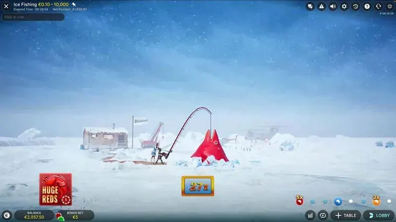

Guides
Ice Fishing RTP and the Real Cost of Side Bets
The main bet and the side bets on Ice Fishing do not carry the same house edge. Covering the wheel feels safer and is measurably more expensive.
🔞 18+ only · Real-money gambling

On a live wheel show the temptation is to cover more segments so that something lands every spin. It works — you win more often and lose more money. The two facts are not in conflict.
Why covering the wheel costs more
Each segment carries its own return figure. The high-payout segments generally carry a lower RTP than the low-payout ones, so spreading a stake across everything drags the blended return down towards the worst bet on the table.
The arithmetic
One segment, full stake — you take that segment's RTP, whatever it is.
Stake spread over many — you take a weighted average, and the weights favour the segments you covered most.
Full cover — a guaranteed small win per spin, at a guaranteed loss per hour.
Hit rate against hourly cost
Approach | Spins that pay something | Cost per hour |
|---|---|---|
Single segment | Low | Lowest |
Two or three segments | Medium | Moderate |
Broad cover | Almost every spin | Highest |
Feeling like you rarely lose is a product of the bet layout, not of the odds. The wheel does not know how many segments you bought.
What to check before playing
Open the game rules and read the RTP per bet type, not the headline figure.
Note that Evolution publishes these numbers — an operator showing different ones is a red flag.
Decide the bet layout before the session and leave it alone.
Track total staked per hour, not net result per spin.
If you are still deciding whether the game is worth your time, start with the legitimacy checks.